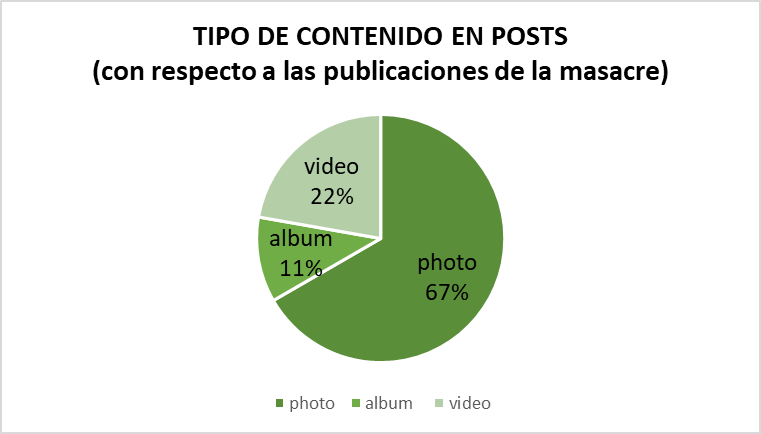

.png)
.png)
Se pudo evidenciar que en los meses analizados Vorágine en cuanto al caso de Leguízamo tuvo una preferencia por publicar fotos (ilustraciones en el caso particular del medio) con un valor de 67%, siguiente a las fotos, los videos representaron un 22% del contenido y para finalizar los álbumes fueron el 11% de las publicaciones. Así mismo en las estadísticas de CrowTangle en el POST COUNT se expone que las fotos de Vorágine en dichos meses representaron el 56.98% de los posts, lo cual indica que el medio periodístico prefiere por encima de otros formatos las fotos
Los videos publicados desde el 10 de abril al 15 de abril fueron los que más vistas le generaron al medio en los 3 meses analizados
A pesar de que la Masacre sucedió el 28 de marzo del 2022. Vorágine tardó 13 días para publicar la novedad de su reportaje en su página de Instagram, es decir el 10 de abril del 2022
El mes con más consistencia de posts fue abril con un total de 8 publicaciones, mayo tuvo 1 y junio 0, lo cual indica que Vorágine perdió constancia de contenido del caso a partir de mayo.